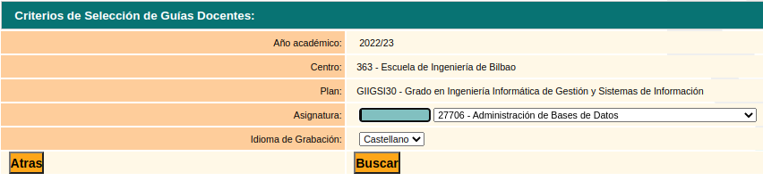
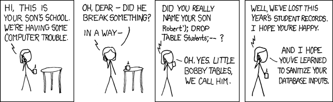

Web Segurtasuna
Mikel Egaña Aranguren
mikel-egana-aranguren.github.io

Mikel Egaña Aranguren
Mikel Egaña Aranguren
mikel-egana-aranguren.github.io
https://doi.org/10.5281/zenodo.4302267
https://github.com/mikel-egana-aranguren/EHU-SGSSI-01

CWE (Common Weakness Enumeration), MITRE: ahulezia espezifikoak ekar ditzaketen software- eta hardware-ahulezien zerrenda (Adib. CWE-352: Cross-Site Request Forgery (CSRF))
CVE (Common Vulnerabilities and Exposures), MITRE: ahultasun espezifikoen zerrenda (Adib. CVE-2021-44228)
Web zerbitzari batean urruneko komando-exekuzioa ahalbidetzen du PHP script maltzur baten bidez
OWASP Top Ten (2025), Open Web Application Security Project: ranking batean azaltzen ditu web urrakortasun ohikoenak, CWE-ekin eta CVE-ekin estekatuta
Sarbide-kontrolaren ondorioz, definitutako baimenek ezarritako mugen barruan bakarrik jardun behar du erabiltzaileak
Sarbide-kontrolean huts egiteak ondorio larriak dakartza
"Ukatzea lehenetsia" printzipioa urratzea: sarbidea gaitasun, rol edo erabiltzaile jakin batzuei bakarrik bermatu beharko litzaieke, baina edozeinen esku dago

Sarbide-kontrola URL parametroen edo API eskaeren bidez saihestea
Kontu pertsonal batera sartu eta datuak aldatu erabiltzailearen identifikatzailearekin
API sarbidea kontrolik gabe HTTP POST, PUT, eta DELETE metodoetarako
Pribilegioa igotzea: administratzaile gisa jardutea, erabiltzaile gisa logeatuta egonik
Replaying edo JSON Web Token (JWT) aldatzea pribilegioak igotzeko
CORSen konfigurazio okerrak baimendu gabeko jatorrietatik APIra sartzeko aukera ematen du
Lehenetsitako ukapena baliabide guztietarako, publikoak izan ezik
Kontrolerako sarbide-mekanismoak behin bakarrik ezartzea eta aplikazio osora zabaltzea, CORSen erabilera minimizatuz
Direktorioen zerrendaketa ez baimentzea eta aplikazioaren root mailan metadatuen fitxategirik (adibidez, Git) edo backup-ik ez dagoela ziurtatzea
Sartzeko ahalegin guztiak logeatzea, administratzaileak ohartaraztea beharrezkoa denean (adibidez, huts egindako sarbide asko)
APIetan eskaeren tasa mugatzea, programen bidezko erasoak saihesteko
Saioaren identifikatzaileak:
Erabilitako metodo kriptografikoen akatsak, ondorioz datuak azaltzen direlarik
Datuak babesteko beharrak zehaztea, bai transmisioan, bai biltegiratzean (At rest): datuak babesteko legeak
Datuak testu lau gisa transmititzen dira? Kanpoko zein barruko konexioetan (adibidez, karga-balantzearen zerbitzariak): HTTP, SMTP, FTP ...
Algoritmo edo protokolo zaharkituak edo ahulak erabiltzen dira?
Gako ahulak edo gako lehenetsiak erabiltzen dira?
Gakoen kudeaketa egokia erabiltzen da?
Algoritmo ahulak ekidin
Key Generator edo entropia altuko Random Number Generator -ak erabili
Man in the middle erasoak ekiditeko SSL/TLS bezalako konexio seguruak erabili
Baimendutako pertsonek soilik erabiltzen dituztela gakoak bermatu
Egokiena hardware dedikatua erabiltzea: Hardware Security Module:
Hodeian ere zerbitzuak erabili daitezke: Google Cloud Key Management
Gako batek bere balio-aldia amaitzen duenean, kendu egiten da, datuak deszifratu eta berriro zifratzen direlarik gako berri batekin
Zenbat eta denbora gehiago egon gakoren bat zirkulazioan, orduan eta arriskutsuagoa izango da
Gako bat konprometitua izan bada, ezeztatu egin behar da, nahiz eta baliozkotasun-epearen barruan egon
Ezeztatutako gakoa gordetzea eskatzen duten estandarrak daude, etorkizunean datuak deszifratzeko behar izanez gero (adibidez, epaiketa batean)
Gakoa erabat suntsitu: etorkizunean ezin da erabili
Ez idatzi gakoaren balioak software-kodean, nahiz eta segurua izan
Pribilegio txikienaren printzipioa: erabiltzaile batek benetan behar dituen gakoetarako sarbidea soilik izan beharko luke
HSM-ak erabili
Gakoen kudeaketa ahalik eta gehien automatizatu
Sorkuntza, Banaketa etab. pertsona desberdinen artean banatu
Gakoak zatietan banatu
Zerbitzariaren ziurtagiria baliozkoa eta konfiantzazkoa da, eta CA batek bermatzen du?
Erabiltzaileen pasahitzak zuzenean gako gisa erabiltzen al dira, Pasword Based Key Derivation Functions (PBKDFs) erabili beharrean?
Ausazkotasun-hazia behar bezain indartsua al da?
Transmititutako, prozesatutako eta biltegiratutako datuak pribatutasun-mailaren arabera sailkatu
Ahalik eta datu pribatu gutxien biltegiratzea, nahiz eta Tokenizazioa bezalako metodoak erabili
Biltegiratutako datu guztiak zifratu (Encription at rest)
Algoritmo eguneratuak (MD5, SHA1, ... ez), gako indartsuak, eta Gakoen kudeaketa erabili
Transmititzen diren datu guztiak zifratu TLS FS bidez (TLS + Forward Secrecy)
Bezeroan datu berezientzako ez baimendu cache-en erabilpena
Pasahitzak hash eta gatzarekin biltegiratu
Entropia handiena duten haziak erabili

txtUserId = getRequestString("UserId");
txtSQL = "SELECT * FROM Users
WHERE UserId = " + txtUserId;
105 OR 1=1
SELECT * FROM Users WHERE UserId = 105 OR 1=1;
Parametroak: exekutatzean kontsultari gehitzen zaizkion eta hitzez hitz aztertzen diren balioak (adibidez, aldagaiak zutabe-izenak aipatzen baditu, interpreteak ziurtatzen du parametroak zutabe-izenak direla kontsultara gehitu eta exekutatu aurretik)
$stmt = $dbh->prepare("INSERT INTO Customers
(CustomerName,Address,City)
VALUES (:nam, :add, :cit)");
$stmt->bindParam(':nam', $txtNam);
$stmt->bindParam(':add', $txtAdd);
$stmt->bindParam(':cit', $txtCit);
$stmt->execute();
Datu-basearen edukia objektuetara itzultzen duten framework-ak
Ez dago datu-basearekin konexio zuzenik
String sql = "SELECT ... FROM persons WHERE id = 10"
DbCommand cmd = new DbCommand(connection, sql);
Result res = cmd.Execute();
String name = res[0]["FIRST_NAME"];
Person p = repository.GetPerson(10);
String name = p.FirstName;
Iturburu-kodea berrikustea
HTTP goiburuen, URL-en, Cookie-en, JSON, XML eta web input-en testatze automatizatua
Application Security Testing erabili Continous Integration/Continous Deployment prozesutan
Interpretea erabiltzen ez duten API seguruak erabiltzea. Ezin bada, dei parametrizatuak edo ORMak erabili
Input-ak balioztatu
Ahal diren karaktere berezi guztiak "Escape"-atu
SQLn LIMIT bezalako kontrolak erabiltzea, datuen galera masiboa saihesteko
Arkitektura akatsak, kodea inplementatu baino aurrekoak
e-commerce kate batek erosleen eskaera asko jaso ditzake bot-en bidez, produktuak beste leku batzuetan saltzeko. Hori ekidin daiteke, adibidez, arkitekturan bot-ak detektatzen dituzten osagaiak gehituz (Eskaera asko denbora gutxian, produktu bat argitaratzeko segundo gutxiren buruan egindako eskaera, eta abar).
Erabiltzaileen nortasuna berrestea, autentifikatzea eta saioak kudeatzea funtzio kritikoak dira sistema autentifikazioan oinarritutako erasoen aurka babesteko
Osotasunaren urraketetatik babesten ez duen kodea eta azpiegitura dagoenean ematen dira
Adibidez, aplikazio baten dependentziak konfidantzarik gabeko errepositorio edo CDN (Content Delivery Network)etatik jasoak izan badira
Continous Integration (CI) / Continous Deployment (DC) pipeline batek kode maltzurra sartu ahal du aplikazioan
Aplikazio askok auto-eguneratze funtzioak dituzte, beharrezkoak diren osotasun testik gabe
Sinadurak edo antzeko mekanismoak erabili softwarea iturri ofizialetik datorrela eta aldatua ez dela izan balioztatzeko
NPM edo Apache Maven bezalako tresnek errepositorio fidagarriak erabiltzen dutela bermatzea. Posible bada segurtasun altuagoko errepositorioak erakunde barruan eduki (Adib. Nexus)
IC/DC pipelinek prozesu osoan kodearen osotasuna ziurtatzeko konfigurazio eta sarbide-kontrol egokiak dituztela bermatzea
Ziurtatu ez dela datu serializaturik bidaltzen sinatu gabe, edo osotasunaren balidazio metodorik gabe, des-serializatutako datuen aldaketa edo replay bat detektatzeko
Etxerako bideratzaile askok firmware-eguneraketak egiaztatu gabe aplikatzen dituzte. Horien aurkako erasoak etorkizuneko urteetan gehitzea espero da
Solar Winds Orion attack (Munduko 18.000 erakunde inguru eragin zituen)
Aplikazioak ez du ekiditen ohiz kanpoko egoera bat gerta dadin
Ez du egoera detektatzen gertatzen ari den bitartean
Modu desegokian erantzuten du, edo ez du gero erantzuten
CWE-209 Generation of Error Message Containing Sensitive Information
CWE-215 Insertion of Sensitive Information Into Debugging Code